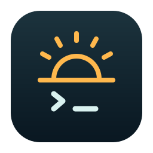

Set a timer
Set how long your Mac stays awake. Choose a preset or a custom duration.

Agent AwakeFor coding agents and long tasks
Choose a timer, stay awake until you stop it, or follow Claude Code and Codex activity. All from your menu bar.
Not notarized yet. macOS may block the first launch. How to open it.
Display can sleep · lid protected
Following agent activity
1 hour remaining
Try the preview. It does not control your Mac.
Set how long your Mac stays awake. Choose a preset or a custom duration.
Keep an existing remote terminal available until you end the session. Set up SSH or Tailscale separately.
Stay awake while Claude Code or Codex works. Claude Code is detected automatically; Codex uses optional hooks.
GET STARTED
You need macOS 14 or later. Both Apple Silicon and Intel are included.
Full setup and troubleshootingOpen the DMG. Drag Agent Awake to Applications, then eject the disk image. Open the app from Applications.
This preview is not notarized. If Apple says it cannot verify the app is free of malware, click Done or Cancel. Then open System Settings → Privacy & Security, scroll down, and choose Open Anyway for Agent Awake. Confirm Open if you trust this download.
If the alert says the app is damaged or will damage your Mac, report the message. Apple’s guide.
Click the sun or moon icon, then the gear for Settings. There is no Dock icon.
In Settings → Setup, click Enable helper. If approval is needed, enable Agent Awake under System Settings → General → Login Items & Extensions → Allow in the Background. On macOS 14, this pane is called Login Items.
Run Start two-minute check. Close the lid and check your remote terminal from another device. Confirm the screen turns off and sleep returns after the timer. Test on battery and charger if you use both.
OPTIONAL
Timers work without this setup.
Nothing to install. Agent Awake reads the status Claude Code reports for each session. Enable Automatic agent mode.
Install Codex’s hooks in Setup. Open /hooks in Codex, review and trust the Agent Awake commands, then restart your sessions and enable Automatic agent mode.
Automatic detection can miss some activity. Use a timer or an indefinite session when you need a constant connection. Details on GitHub.